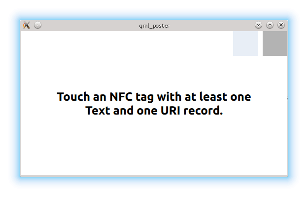

QML Poster Example
A QML example about reading and displaying NFC Data Exchange Format (NDEF) messages.
The QML Poster example displays the contents of specifically formatted NFC Data Exchange Format (NDEF) messages read from an NFC Tag. The NDEF message must contain a URI record, an optional image/* MIME record, and one or more localized Text records.

Running the Example
To run the example from Qt Creator, open the Welcome mode and select the example from Examples. For more information, visit Building and Running an Example.
Applying NDEF Filters
The example is designed to display the content of a very specific type of NFC tag. The tag must contain at least one URI record and one text record. If those two record types do not exist, nothing will happen. Such filtering is applied via the NearField type's filter property. The property accepts a list of NdefFilter objects.
filter: [ NdefFilter { type: "U"; typeNameFormat: NdefRecord.NfcRtd; maximum: 1 }, NdefFilter { type: "T"; typeNameFormat: NdefRecord.NfcRtd }, NdefFilter { typeNameFormat: NdefRecord.Mime; minimum: 0; maximum: 1 } ]
Processing Found NDEF Messages
Once an appropriate tag is found, the NearField::messageRecords property reflects the content. It transports the list of found NDEF records. The QML snippet below demonstrates how these records can be accessed:
onMessageRecordsChanged: { for (i = 0; i < messageRecords.length; ++i) { switch (messageRecords[i].typeNameFormat) { case NdefRecord.NfcRtd: if (messageRecords[i].type === "T") { if (messageRecords[i].localeMatch > currentLocaleMatch) { currentLocaleMatch = messageRecords[i].localeMatch; posterText.text = messageRecords[i].text; found = true; } } else if (messageRecords[i].type === "U") { posterUrl.text = messageRecords[i].uri; found = true; } break; case NdefRecord.Mime: if (messageRecords[i].type.indexOf("image/") === 0 ) { posterImage.source = messageRecords[i].uri; found = true; } break; } if (!found) console.warn("Unknown NFC tag detected. Cannot display content.") } }
See also Qt NFC.